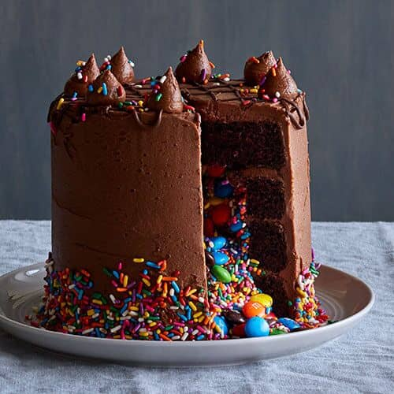

Sveiki atvykę į Juodai skanių desertų svetainę!
Šioje svetainėje galite ne tik akis paganyti, bet ir išmokti pasigaminti tai, ką matote. Jei tingisi gaminti ar trūksta įgūdžių, visuomet galite pateikti užsakymą ir šie nuostabūs tortukai bus jūsų per 3 dienas! Toliau prisistato keturi patys skaniausi (man) tortai. Skanaus!
Tortas Nr. 1 - "Ten, kur vaivorykštė"
Šis tortas gimė kažkada vasarą iš entuziazmo ir laisvės žaisti spalvomis iš gamtos. Lygiai taip iš entuziazmo ir laisvės žaisti gimsta ir meilė. O tai, ką mylim, mums yra labai brangu ir paslaptinga, verta širdies. Gebantis žvelgti tiesiai į širdį, manojoje neabejotinai išvys šį tortą ir nieko aš čia jau negaliu padaryti, kaip ir negaliu apsakyti, kaip iš paprastutės idėjos jis tapo tokiu išbaigtai nepriekaištingu: lengvutis ir traškus begliutenis biskvitas su lofilizuotomis, tikromis, kokoso kremo pievoje besiganančiomis uogomis. Šis tortas yra vasaros saulėtekio spalvos, vaikų mylimiausias – rožinis!
Šaltinis: Holigans
Tortas Nr. 2 - "Tarpgalaktinis skonis"
Atrodo paprastas, bet iš tiesų labai, nepaprastai skanus! Jį jau spėjo įvertinti bei pamilti ne tik suaugę, kurie visad nustemba paragavę, kad taip skanu, bet ir vaikai – sukirtę gabaliuką, surenka net trupinukus! Labai šokoladinis ir labai serbentinis, gaivus ir saldus, švelnus ir rūgštelėjęs.. Niam
Šaltinis: Holigans
Tortas Nr. 3 - "MM's fontanas"
Šis dangiškas delikatesas, padengtas šokoladu ir smulkintais lazdynų riešutais – nuostabus drėgno šokoladinio biskvito ir naminio eko lazdynų riešutų kremo derinys. Auščiausios kokybės kakava, eko lazdynų riešutai, belgiškas becukris šokoladas.. mhhhh… Dangišką malonumą papildo žinojimas, kad šis tortas – be gliuteno, be pridėtinio cukraus ar sirupų, saldintas tik datulėmis, be pieno ir sojos produktų. Ar gali būti ir sveika, ir skanu? Taip! Šis tortas – gyvas to pavyzdys.
Šaltinis: Holigans
Tortas Nr. 4 - "Atsargiai, miškas"
Jis atima kvapą. Kai jis pasirodo pobūvyje, visi kiti tortai nuščiūva, nes supranta – atvyko karalius. Tortų tortas. Jeigu kada gyvenime sugalvosite padaryti grieką, tai tik dėl jo. Nes nėra nieko, kas dar būtų vertas grieko. Rimtai. Šis tortas moko atsidavimo, nes jo negali valgyti dvejodamas. Atsiduoti torto malonumui visa širdimi. Čia kaip leistis rogutėmis nuo stataus kalno. Pojūčiai tiesiog “pasiima tave”: tu leidiesi, o akyse mirga gražuoliai kokosų grietinėlės, skirtingų spalvų biskvitų, augalinio sviestinio kremo, riešutų inkliuzai griliaže… krimst cukruotą migdolą. Viskas. Mintys pakimba laike, o tu esi laimingas, nes leidai sau būti. Skaniai, labai labai skaniai.
Šaltinis: Holigans
Susipažinkite su Juodai skanių tortų kaloringumu:
| Nr. | Torto pavadinimas | Kalorijos 100 gr | Riebalai 100 gr | Baltymai 100 gr | Angliavandeniai 100 gr |
|---|---|---|---|---|---|
| 1 | Ten, kur vaivorykštė | 605 kcal | 52 gr | 15 gr | 33 gr |
| 2 | Tarpgalaktinis skonis | 520 kcal | 43 gr | 18 gr | 39 gr |
| 3 | MM's fontanas | 580 kcal | 35 gr | 10 gr | 55 gr |
| 4 | Atsargiai, miškas | 750 kcal | 65 gr | 9 gr | 26 gr |
Šaltinis: Juodai skanūs tortai.
Susipažinę su tortais, sužinokite ir jų kainas:
| Nr. | Torto pavadinimas | Kaina už kg be spec. papuošimo | Kaina už kg su spec. papuošimu |
|---|---|---|---|
| 1 | Ten, kur vaivorykštė | 35 € | 45 € |
| 2 | Tarpgalaktinis skonis | 45 € | 55 € |
| 3 | MM's fontanas | 35 € | 45 € |
| 4 | Atsargiai, miškas | 50 € | 60 € |
Šaltinis: Juodai skanūs tortai.
Taip pat galite rinktis ir kitus desertus (kaina sutartinė):
- (Ne)kaltoji avietėlė
- Nenoriu persivalgyti (nekaloringas desertas)
- Dar daugiau šokolado
- Močiutės pyragėlis
- Angelo sparneliai
Kaip pateikti užsakymą? Paprasta kaip 1-2-3!
- Išsirink tortą.
- Pagal norimą svorį apskaičiuok kainą lentelėje.
- Parašyk man laišką su savo užsakymu el. paštu noriu@jst.lt arba formoje apačioje.
- Atvyk pasiimti torto.
- Skanaus!